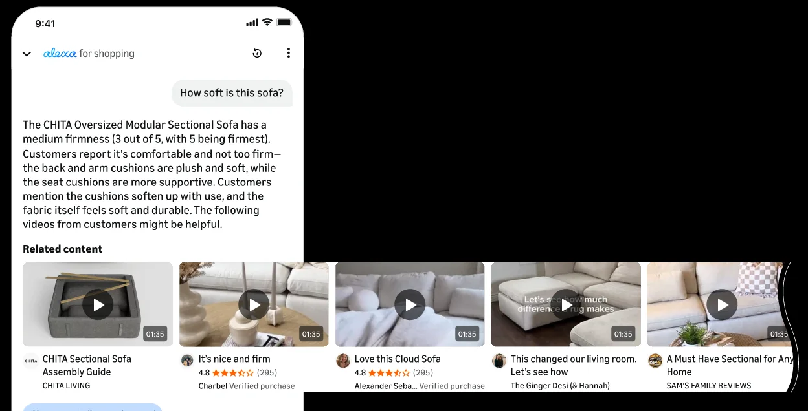

When one answer may be wrong, offer a few
If the AI cannot be sure its best answer is right, return a short ranked set rather than a single confident one, and make it easy to move to the next.
Where it sits in the flow
- AskThe person has a question, or a thing they want to find.
- AnswerThe AI returns something: an excerpt, a marker, a segment, a generated answer.
- CheckThe person looks at the evidence and decides whether to believe it.
- DecideThe person acts: proceeds, moves on, or corrects the AI.
What users needed
People could tell quickly whether an answer was what they wanted, but when it was not, they had nowhere to go: the single answer was a dead end, and they left. They did not want a list of everything. They wanted a second and third candidate within reach when the first missed.
The problem
A system that returns one answer stakes everything on it. When its precision is high but not perfect, a meaningful share of people get a confident wrong answer with no recourse, and each one costs more trust than a right answer earns. Returning everything the system found is no better: the person is back to searching.
The pattern
When the system's confidence in a single answer is not high enough to stand alone, return a short ranked set instead. Rank by what the person would rank by: how well each candidate matches the question, how good it is, how long it takes to check. Put the best first, make the rest reachable in one gesture, and when the person opens one, keep the path to the next on screen so a miss costs a swipe rather than a restart.
The set is an honest statement of confidence. One answer says "this is it"; three say "it is one of these".
What makes it hard
Three is a design decision, not a default. The set has to be short enough to scan and ranked well enough that the first usually suffices. The move to the next has to be obvious without being pushy, and the ranking criteria have to be ones the person would agree with, or the second answer looks random.
When it fails
A long set is a search result page. A set with no visible order makes the person check all of them. A set whose first item is usually wrong trains them to ignore the first. And if the way to the next item is hidden, the set is a single answer with extra decoration.
In my work
In the multimodal version of Alexa, when a question is answered with video, the answer is a short ranked row of videos rather than a single clip, ranked by relevance, quality and length. When the shopper opens one, a prompt at the bottom of the screen offers the next. One video may not be the right one; a few, in order, usually include it.
In pictures

Source
- From watching to asking: how AI is reshaping how we consume shopping videos. Xinmin Weekly and Xinhuanet, June 1, 2026, in Chinese. Xinmin Weekly, Xinhuanet. A feature about my work at Amazon; the patterns on this site are my own English write-up of the same work, stated so that they apply beyond it.